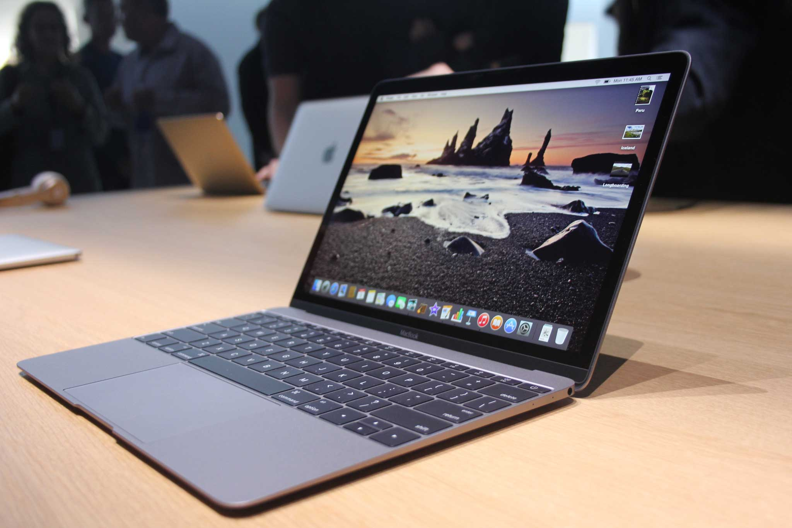

Beginning of a New Technological Era Throughout history and generation time as innovated, and in time people have progressed with technology. Computer continues playing a key aspect in life ranging from the beginning with the Abacus, created in the 14th century, to the development of modern day Macintosh and Microsoft. In the beginning, these devices, provide benefits for calculations through inventions such as Slide Rules ( 17th cent.), Pascaline ( 1642), Jacquard Loom (1804), and Analytical Engines (1850). Little did they know the purpose evolved, as human interactions involved.  Past That Shaped Modern Day - 1800’s Many inventors from across the World, and different places contributed to the roles of how the basis were built. One of them being Joseph Marie Jacquard, a French inventor in 1801 who automatically weaves fabric designs through a loom of punched wooden card. This in turn contributes to generations later, using similar punch card designs. Decades later, in 1890 Herman Hollerith, influenced from the original loom design, designs a version of the punch card system. This in turn, contributes to calculating the 1880 consensus. Thus saving the government 5 million dollars. Vision to reality - 1900’s With the ideal of creating a Universal machine, In 1936 Alan Turning created the Turning machine which computes anything computable. This machine, established the central concept of modern computer. As new ideas and inventions progressed. This in turn influence the generation that came after to create their own version. In 1937, J.V Antanasoff attempted to build his own version. Thus, inventing the, the first computer, which did not include gears, cam, belts, or shafts. As years passed by, inspired and ready to advance the views of computers, his student Clifford Berry designs a computer that can solve 29 equations. Due to the encouragement of his mentor, in 1941 he was able to store information on the computer own memory. Eventually marking an advancement on Antanasoff invention. The Rise of World-leading Tech Companies Fast forward, a group at at Bells LAB in 1969 produced UNIX in 1969. With the ability of portability on various platforms, UNIX soon became the main operating system of companies. Companies later developed add-ons to the computers such as Dynamic Access Memory Chip. Intel a new company sparked in the technology world base of the demands. Ideally, new companies created floppy disk in 1971, and connecting multiple computers through ethernet in 1973. Eventually creating a rise in technology for marketing. Modern Innovations to a Technology Empire In 1776, Steve Jobs and Steve Wozniak reveals the first computer with a single circuit board. Eventually offering graphics and an audio cassette storage. On the other hand, tension arose with Microsoft claiming they copied the look, and feel. As innovation aroused, it was harder to spot differences in models, thus having multiple lawsuits. By 1985, Microsoft introduces Windows to the nation. Later in the year, dot com domain is registered. Which is now used in modern time for searching and creating websites. With these innovations, Web browsers, websites, and new devices are created. With more available, a easier way of communication is established. Despite having the original intentions of creating a math based device, computer found a way to connect and help people in modern time.